习近平法治思想是把马克思主义法治理论同中国法治建设具体实际相结合、同中华优秀传统法律文化相结合的重大理论创新成果，是原创性的当代中国马克思主义法治理论、21世纪马克思主义法治理论。下列有关表述，不正确的是（）。
A.法治是人权最有效的保障，推进全面依法治国，根本目的是依法保障人民权益
B.党的领导和社会主义法治是一致的，社会主义法治必须坚持党的领导，党的领导必须依靠社会主义法治
C.中华法系源远流长，中华优秀传统法律文化蕴含丰富法治思想和深邃政治智慧，要积极推动中华优秀传统法律文化创造性转化、创新性发展
D.新时代我们党在方向道路问题上吸收了西方“宪政”“三权分立”“司法独立”等思想，明确将坚持依宪治国、依宪执政作为全面依法治国的首要任务
加快建设农业强国，扎实推动乡村产业、人才、文化、生态、组织振兴。下列措施有利于培育乡村可持续“造血”能力，助推乡村振兴的有（）。
①建立健全城乡融合发展体制机制和政策体系
②精准针对农村贫困地区大量投放资源和要素
③推动乡村产业同质化发展充分发挥规模效应
④涉农企业下沉，形成以城带乡联动发展格局
⑤鼓励建设冷库等田间“冰箱”实现错峰销售
A.2 项 B.3 项 C.4 项 D.5 项
文化关乎国本、国运。在新的起点上继续推动文化繁荣、建设文化强国、建设中华民族现代文明，是我们在新时代新的文化使命。下列有关说法不正确的是（）。
A.中华文明是世界上绵延不断且以国家形态发展至今的四大文明之一
B.中华民族具有百万年的人类史、一万年的文化史、五千多年的文明史
C.弘扬以爱国主义为核心的民族精神和以改革创新为核心的时代精神
D.党的十八大以来，以习近平同志为核心的党中央确立和坚持马克思主义在意识形态领域指导地位的根本制度
2026年8月16日出版的第16期《求是》杂志发表了中共中央总书记、国家主席、中央军委主席习近平的重要文章《提高防灾减灾救灾能力》。根据文章，下列说法正确的有（）。
①做好防灾减灾救灾工作，必须坚持社会共治
②推动灾害治理向事后救援转型
③强化法治支撑和科技保障
④基层是抵御自然灾害的第一线，抓基层、强基础的工作始终不能放松
⑤防灾减灾救灾涉及多个部门，应急管理部作为牵头部门要靠前发力
A.5 项 B.4 项 C.3 项 D.2 项
党的二十大报告指出，继续推进实践基础上的理论创新，首先要把握好新时代中国特色社会主义思想的世界观和方法论，坚持好、运用好贯穿其中的立场观点方法。下列说法正确的是（）。
A.坚持胸怀天下是根本价值立场，体现了历史唯物主义群众史观
B.坚持自信自立是内在精神特质，体现了客观规律性和主观能动性
C.坚持人民至上是鲜明理论品格，体现了变与不变、继承与发展
D.坚持守正创新是重要实践要求，体现了矛盾的普遍性和客观性
人类只有一个地球，人类也只有一个共同的未来。无论是应对眼下的危机，还是共创美好的未来，人类都需要同舟共济、团结合作。实践一再证明，任何以邻为壑的做法，任何单打独斗的思路，任何孤芳自赏的傲慢，最终都必然归于失败！让我们携起手来，让多边主义火炬照亮人类前行之路，向着构建人类命运共同体不断迈进！这段文字所蕴含的哲理是（）。
A.量变达到一定程度必然引起质变
B.事物的发展是前进性与曲折性的统一
C.联系是普遍的，任何事物都处在普遍联系之中
D.矛盾的普遍性和特殊性在一定条件下可以相互转化
辩证否定的实质是“扬弃”，即既克服又保留。下列体现这一哲学道理的表述包括( )。
①坚持守正创新，该改的坚定不移改，不该改的不改
②谋划“十五五”规划，要分领域确定目标任务、提出思路举措
③要推动中华优秀传统文化实现创造性转化、创新性发展
④传承红色基因，赓续红色血脉，创新红色文化传播方式
A.①②③ B.①②④ C.①③④ D.②③④
下列关于土地革命战争，说法正确的有（）。
①武昌起义是共产党独立领导革命战争、创建人民军队的伟大开端
②八七会议确定了土地革命和武装斗争的总方针
③古田会议确定了把军队建设成为无产阶级领导的新型人民军队
④遵义会议正式提出抗日民族统一战线
A.1 项 B.2 项 C.3 项 D.4 项
2026年6月23日，《习近平党建文选》第一卷、第二卷出版发行。下列说法错误的是（）。
A.好干部的标准，大的方面说，就是德才兼备。概括起来说，好干部要做到信念坚定、为民服务、勤政务实、敢于担当、清正廉洁
B.党要管党，首先是管好干部；从严治党，关键是从严治吏
C.决定一个人如何的是品行，决定一名党员如何的是党性。衡量党性强弱的根本尺子是公、私二字
D.党的力量来自干部。党的全面领导、党的全部工作要靠党的干部体系去实现
2026年7 月1 日，习近平在庆祝中国共产党成立 105 周年大会上的讲话中指出，我们党领导人民经过波澜壮阔的伟大斗争，推翻帝国主义、封建主义、官僚资本主义三座大山，建立人民当家作主的新中国，彻底结束旧中国半殖民地半封建社会的历史，实现人民生活（）的历史性跨越。
A.从积贫积弱到独立自主再到世界强国 B.从温饱不足到总体小康再到全面小康 C.从封闭落后到改革开放再到全面开放 D.从短缺匮乏到物质充裕再到共同富裕
把党的建设作为一项伟大工程来推进，是我们党领导人民进行伟大社会革命的重要法宝。下列关于新时代党的建设说法正确的是（）。
A.政治建设是基础性建设，要摆在首位
B.党的思想建设的首要任务是用党的创新理论武装全党
C.忠诚干净担当是党对领导干部提出的政治要求
D.腐败是危害党的生命力的最大毒瘤，是党长期执政面临的最大危险
2026年第17期《求是》摘选习近平总书记2013年6月至2026年7月期间有关坚持落实管党治党政治责任重要论述。文章指出，经过这些年努力，各级建立了党建工作责任制，（）的党建工作格局基本形成。
A.政府抓、书记抓、各有关部门抓、一级抓一级、层层抓落实
B.党委抓、书记抓、各有关部门抓、一级抓一级、层层抓落实
C.政府抓、书记抓、各有关部门抓、群众监督抓、层层抓落实
D.党委抓、书记抓、各有关部门抓、群众监督抓、层层抓落实
2026年9月1日，习近平在埃及媒体发表署名文章。今年是中埃建交70周年，关于中埃关系，下列说法正确的有（）。
①中埃始终是平等互信的真诚朋友
②中埃始终是和衷共济的亲密兄弟
③中埃始终是合作共赢的可靠伙伴
④中埃始终是友好互鉴的成功典范
A.①②③ B.①③④ C.②③④ D.①②③④
中华优秀传统文化有很多重要元素，共同塑造出中华文明的突出特性，其中之一就是具有突出的创新性。对于中华文明具有突出的创新性，下列理解正确的是()。
①从根本上决定了中华文化对世界文明兼收并蓄的开放胸怀
②从根本上决定了中华民族守正不守旧、尊古不复古的进取精神
③从根本上决定了中华民族不惧新挑战、勇于接受新事物的无畏品格
④从根本上决定了中华民族交往交流交融的历史取向
A.①④ B.③④ C.①② D.②③
健全绿色低碳发展机制，实施支持绿色低碳发展的财税、金融、投资、价格政策和标准体系，发展绿色低碳产业，健全绿色消费激励机制，促进绿色低碳循环发展经济体系建设。关于健全绿色低碳发展机制，下列举措不恰当的是（）。
A.优化政府绿色采购政策，完善绿色税制
B.建立碳排放双控向能耗双控全面转型新机制
C.完善资源总量管理和全面节约制度，健全废弃物循环利用体系
D.加快规划建设新型能源体系，完善新能源消纳和调控政策措施
习近平总书记强调，学习好贯彻好党的二十届四中全会精神，是当前和今后一个时期全党全国的一项重大政治任务。关于党的二十届四中全会精神，下列表述正确的是（）。
A.把捍卫经济安全摆在首位，加强重点领域国家安全能力建设，突出保障事关国家长治久安、经济健康稳定、人民安居乐业的重大安全
B.坚定不移推动高质量发展，构建以新兴产业和未来产业为骨干的现代化产业体系
C.坚定不移扩大高水平对外开放，做强国内国际大循环，加快构建新发展格局
D.加强普惠性、基础性、兜底性民生建设，稳步推进基本公共服务均等化
党的二十大报告指出，要增进民生福祉，提高人民生活品质。下列有关表述正确的是（）。
A.分配制度是促进共同富裕的基础性制度
B.人民健康是最基本的民生
C.健全的社会保障体系是民族昌盛和国家强盛的重要标志
D.就业是民生保障安全网和经济运行减震器
以人民为中心的发展思想不是一个抽象的玄奥的概念，不能只停留在口头上，止步于思想环节，而要体现在经济社会发展各个环节。下列各项民生话题说法正确的有( )。
①深化收入分配制度改革，优化收入分配结构
②全面贯彻党的教育方针，把教育摆在经济社会发展优先位置
③把保障人民健康放在优先发展的战略地位，全面推进健康中国建设
④完善基本养老保险省级统筹制度，发展多层次多支柱养老保险体系
A.1 项 B.2 项 C.3 项 D.4 项
《数字乡村高质量发展行动计划（2026—2030年）》印发，《行动计划》明确，到2030年，数字乡村发展取得显著成效，（）的整体水平明显提升
A.乡村产业数字化、乡村生产智能化、乡村治理智慧化
B.乡村产业数字化、乡村生活现代化、乡村治理智慧化
C.乡村产业数字化、乡村服务网络化、乡村治理智慧化
D.乡村产业数字化、乡村建设信息化、乡村治理智慧化
人民有信仰，国家有力量，民族有希望。（）是当代中国精神的集中体现，凝结着全体人民共同的价值追求。
A.科学发展观 B.社会主义荣辱观 C.社会主义核心价值观 D.中国特色社会主义文化建设
关于收入分配，下列说法错误的是（）。
A.我国退休职工的退休金属于转移性收入
B.劳动者的工资、奖金等是国民收入初次分配的一部分
C.我国现阶段国民收入分配的原则是按劳分配、公平优先
D.我国个人所得税征管采用以自行申报为基础的年度汇算制
根据《中华人民共和国公职人员政务处分法》，下列哪一处分不恰当（）。
A.甲系某行政主管部门公务员，犯故意伤害罪被判处有期徒刑六个月，缓刑一年，被撤职
B.乙系交通运输部门公务员，交通肇事犯罪情节轻微，检察机关对其作出不起诉决定，乙被撤职
C.丙系某国有企业管理人员，犯盗窃罪被单处罚金，被撤职
D.丁系某公办高校事业编管理人员，犯侵占罪但被免予刑事处罚，被撤职
赵某未经批准擅自在人行横道上搭建了小库房，甲县执法局对其作出罚款200元的决定，赵某不服向甲县政府申请行政复议，甲县政府经调解后结案。下列说法不正确的是（）。
A.甲县政府应当制作行政复议调解书
B.甲县政府制作的行政复议调解书应当加盖甲县政府印章
C.赵某在调解书生效前反悔，甲县政府应当依法作出行政复议决定
D.甲县执法局作为政府部门，在调解书生效前不得反悔
甲年老多病，其子乙不愿意履行赡养义务，于是将其带至当地的荒山之中扔弃。乙的行为构成（）。
A.遗弃罪 B.虐待罪 C.故意杀人罪 D.故意伤害罪
关于我国《行政强制法》所称的行政强制，下列表述正确的是（）。
A.行政强制包括行政强制处罚、行政强制措施和行政强制执行
B.行政强制措施，是指行政机关依法对公民的人身自由实施限制，或者对公民、法人或者其他组织的财物实施控制
C.行政强制执行，是指行政机关代替人民法院，对不履行行政决定的公民、法人或者其他组织，依法强制履行义务的行为
D.行政强制的设定和实施，应当适当。采用非强制手段可以达到行政管理目的的，不得设定和实施行政强制
甲拖欠乙200万，乙要求甲以登记在其名下的房产抵债，甲称其已将房屋作价120万（市值200万）卖给丙，虽未过户，但钥匙已交。下列说法正确的是（）。
A.因房屋尚未过户，故甲丙买卖合同无效
B.如乙能举证甲丙构成恶意串通，则甲丙买卖合同无效
C.因甲以欺诈手段损害乙的利益，故甲丙买卖合同无效
D.如甲不履行到期债务，则乙有权变卖甲的房产以优先赔偿
在社会主义核心价值观中，最深层、最根本、最永恒的是爱国主义。拥有家国情怀的作品，最能感召中华儿女团结奋斗。下列名言名句与作者对应错误的是（）。
A.文天祥——人生自古谁无死，留取丹心照汗青
B.陆游——剑外忽传收蓟北，初闻涕泪满衣裳
C.范仲淹——先天下之忧而忧，后天下之乐而乐
D.林则徐——苟利国家生死以，岂因祸福避趋之
产能过剩是指生产能力的总和大于消费能力的总和的经济现象。目前我国工业产能过剩情况比较严重。怎样化解产能过剩？不同的经济理论有不同的政策主张。基于凯恩斯的理论，化解产能过剩的经济政策的着力方向是（）。
A.减少政府投资，压缩产能过剩商品的供给
B.放任经济自由，让市场自动实现供求供给
C.调整产能结构，改善产能过剩的商品的供给
D.实现赤字财政，扩大产能过剩商品的需求
常见的灭火器类型有干粉灭火器、泡沫灭火器、二氧化碳灭火器等。下列有关这几类灭火器的说法错误的是（）。
A.干粉灭火器中的干粉无毒，但吸入后对人体有害
B.图书馆着火最好使用二氧化碳灭火器
C.电器着火、可燃液体着火最好使用泡沫灭火器
D.泡沫灭火器必须来回摇晃后才能使用
牙膏是生活中常用的一种物品。下列有关牙膏的说法正确的是（）。
A.牙膏中的磨料在刷牙时能产生泡沫，便于清洁牙面
B.长期使用同一种牙膏刷牙，有利于巩固灭菌功效
C.氟化物牙膏有利于预防龋齿
D.牙膏管底部的颜色条代表不同的成分
“蜡树银山炫皎光，朔风独啸静三江。老农犹喜高天雪，况有来年麦果香”，这首诗描写了一个节气，对此，下列说法正确的是（）。
A.这个节气是小雪
B.是全年二十四节气中的最后一个节气
C.这一天北半球夜最长，昼最短
D.该节气代表着冬季的开始，北方大部分地区将出现雨雪降温天气
“一方水土养一方人”，人们的生活、生产与自然环境密切相关。下列表述正确的是（）。
A.华北平原是我国面积最大，机械化程度最高的平原
B.东南丘陵的红壤宜栽培柑橘、樟树、茶叶
C.新疆准噶尔盆地周围的绿洲是维吾尔族的聚居中心
D.内蒙古高原降水较少，人们利用坎儿井引水
下列关于气候常识的表述，不正确的是（）。
A.大量砍伐森林会导致全球变暖
B.地球大气对流层的气温呈上冷下热的状态
C.台风、沙尘暴和泥石流均为我国主要的气象灾害
D.梅雨发生季节正是我国梅子的黄熟季节
下列成语中所包含的科学知识，说法错误的是（）。
A.海枯石烂—海水干涸、岩石风化均属于化学变化
B.煽风点火—扇风时鼓入了更多的氧气，氧气有助燃性
C.火树银花——焰火中的镁粉在燃烧中会发出强烈的白光
D.沙里淘金——利用黄金和沙子的密度差异，用水反复淘洗从而获得黄金
关于生活生产中常见的气体，下列说法错误的是（）。
A.氧气在自然界中分布最广，所有的燃烧都需要氧气
B.二氧化碳是绿色植物光合作用不可缺少的原料，温室中常用二氧化碳作肥料
C.氮气常温下很难跟其他物质发生反应，常被用来制作防腐剂
D.甲烷是最简单的烷烃，主要是作为燃料，是天然气和沼气的主要成分
《“健康中国2030”规划纲要》中提出，要努力实现从以治病为中心向以健康为中心转变，从以“治已病”为中心向以“治未病”为中心转变，从疾病管理向健康管理转变，在这种背景下，中医药________。填入画横线部分最恰当的一项是：
A.大有可为 B.大有裨益 C.举足轻重 D.不可或缺
生命在于运动，运动能塑造我们强健的身体，增强抵抗疾病的能力。当然，它对大脑也是有益的。但事实上，运动应该________，否则会使人反应迟钝。长时间大强度运动会使脑组织兴奋性降低，会使能源物质ATP（腺嘌呤核苷三磷酸）耗竭，对大脑机能造成损害。填入画横线部分最恰当的一项是：
A.因人而异 B.张弛有道 C.适可而止 D.循序渐进
脱贫攻坚必须________，一步一个脚印，确保各项扶贫政策措施落到实处，积小胜为大胜，最终取得全面胜利。同时也应加强贫困村基层组织建设，充分调动贫困群众的积极性，提高其参与度、获得感，激励其________，激发其脱贫的内生动力与活力。填入画横线部分最恰当的一项是：
A.未雨绸缪 一马当先 B.一鼓作气 奋发图强 C.循序渐进 再接再厉 D.稳扎稳打 自力更生
在不同的经济增长阶段，经济活动所积累的风险水平和表现程度有所不同，因此金融机构在资源配置上必然会有不同的表现。一般而言，金融机构习惯享受顺周期的经济上升发展，愿意做________的事；普遍忽视顺周期的末端风险管理，而一遇经济逆转，常会“雨中收伞”“________”，一些机构甚至不会再投放资源。填入画横线部分最恰当的一项是：
A.因势利导 急流勇退 B.锦上添花 釜底抽薪 C.顺水推舟 明哲保身 D.济困扶危 竭泽而渔
射电天文学的进步把人们的视线引向了宇宙遥远的边缘，那里________了更多有关宇宙起源和演化的关键线索。天文学家都渴望拥有威力更加强大的射电望远镜，谁拥有了这种望远镜，谁就更有可能站立在现代物理学和天文学的潮头，________，成为破解宇宙之谜的领军力量。填入画横线部分最恰当的一项是：
A.暗藏 胜券在握 B.隐藏 捷足先登 C.埋藏 首当其冲 D.潜藏 独占鳌头
一项世界规模的宏基因组研究显示，含耐药基因的微生物在自然界中________。这意味着人类有可能回到没有抗生素的时代，医疗体系中的很大一部分可能会退回到抗生素发明之前的境地，轻微的细菌感染都可能引起________的后果。填入画横线部分最恰当的一项是：
A.比比皆是 意外 B.不可胜数 可怕 C.千差万别 严重 D.无处不在 致命
开花的塔黄零星分布在空旷的流石滩上，蕈蚊是如何及时发现它们的呢？原来蕈蚊头上的触角就像人类的鼻子，能感受并________不同的气味。开花的塔黄会挥发20多种化合物，其中一种不常见的化合物（二甲基丁酸甲酯）占所有化合物的30%左右。野外诱导试验证实，这种化合物可以________传粉的蕈蚊，为其“导航”。填入画横线部分最恰当的一项是：
A.记忆 引诱 B.区分 吸引 C.识别 刺激 D.追踪 迷惑
早在20世纪70年代末，钱学森就曾多次提出：国防科技的发展不能________于“追尾巴”“照镜子”，而是要________地开拓新领域和新方向。比如英国人针对重机枪机动性差的弱点，发明了坦克，一举撕裂了枪炮林立的僵持局面。这类非对称式的发展思路有助于打破先进国家的技术垄断，形成后发优势。填入画横线部分最恰当的一项是：
A.拘泥 与众不同 B.满足 独辟蹊径 C.沉迷 标新立异 D.止步 别具匠心
就文学创作而言，人工智能未来有可能在编剧或网络文学方面有所________，毕竟除了一小部分杰出的作品外，无论剧本创作还是网络文学，都比较依赖标准化的情节与词语搭配。而文学作品的________程度越高，越有可能人工智能化。填入画横线部分最恰当的一项是：
A.建树 程式化 B.发展 通俗化 C.贡献 规范化 D.突破 模式化
近年来，多部科幻电影在各大影院热播，黑洞、白洞、虫洞等都是人们________的天文学前沿概念，人类似乎在不久的将来就可以通过虫洞快速抵达太阳系外的宜居星球。但实际上，近年来星际飞行理论并没有突破性进展，深空探测在可以预见的将来还只能________于对太阳系内天体的探测。依次填入画横线部分最恰当的一项是：
A.如数家珍 满足 B.了如指掌 倾向 C.津津乐道 局限 D.念念不忘 受制
水污染防治之难，在于水的________。水自源头奔流而下，被沿岸居民、企业反复利用，任何环节疏于治理，都可能让水变脏。水往低处流的特性，也导致“上游排污，下游遭殃”，上游地区的污水如不加处理直流下游，下游往往________也难以应对。依次填入画横线部分最恰当的一项是：
A.流动性 竭尽全力 B.便利性 废寝忘食 C.循环性 殚精竭虑 D.地域性 一掷千金
大国兴衰构成了世界历史的重要篇章，许多学者和政治家________探寻其中的逻辑线索，产生了许多著述宏论。然而，对大国兴衰的原因难有最终答案，这不仅在于问题本身的________，更是因为世界在变化，不同国家兴衰的轨迹不可能简单重复。因此，对这一问题的探讨永远不会________。填入画横线部分最恰当的一项是：
A.殚精竭虑 阶段性 终结 B.废寝忘食 多样性 沉寂 C.呕心沥血 复杂性 过时 D.兢兢业业 模糊性 停止
动漫起初是儿童的天堂。博得孩子们的喜爱，通常是一部动漫作品获得成功最重要的________。然而，随着大众文化的兴起，成人开始进入西方动漫艺术消费的视野，赢得广大成人观众的青睐，越来越为各大动漫公司所________。事实上，也正由于成人动漫观众的不断增长，十多年来，西方动漫艺术最终摆脱了过去的________地位，在当代影视艺术中占据重要一席。填入画横线部分最恰当的一项是：
A.象征 追捧 附属 B.标准 欢迎 弱势 C.标志 重视 边缘 D.指标 称赞 尴尬
东北人喜欢的酸菜，四川人喜欢的泡菜，广东人喜欢的梅菜，都是依靠时间“________”的美食，但在腌制食品中________存在的亚硝酸盐，是健康的一大威胁。更何况很多中国家庭还特别喜欢自制腌制品，一旦操作不当就会引起中毒。腌制品和腐败食物，美味和损伤，有时候只是________。填入画横线部分最恰当的一项是：
A.精雕细琢 广泛 一墙之隔 B.点石成金 少量 一念之差 C.脱胎换骨 普遍 一步之遥 D.改头换面 长期 一时之选
当中原的青铜文化如火如荼之时，面对铜料欠缺的窘境，务实的越人________，开创了瓷器生产的新纪元。秦汉时期是中国历史上大动荡大变革的时代，各行各业的面貌都________，古老越地的陶瓷业也是如此。进入东汉，过去的原始瓷________退出历史的舞台，一种面貌全新的青瓷在上虞曹娥江中游地区的窑场随之诞生。填入画横线部分最恰当的一项是：
A.另辟蹊径 焕然一新 悄然 B.独具慧眼 蒸蒸日上 突然 C.天马行空 日新月异 黯然 D.因地制宜 朝气蓬勃 淡然
我国要在21 世纪中叶建成世界科技强国，科学文化建设将在这个历史进程中扮演非常重要的角色。在这个方面，我们有必要增强文化自信。文化自信不仅表现在对既往文化贡献与价值的认同上，更表现在融汇各种优质的文化资源、创造新文化的信心和决心上。尽管全面挖掘和传承我国传统文化中的科学因素、充分认识我国历史上对科学发展做出的贡献十分必要，但更需要思考如何在未来的科学发展和科学文化建设上，做出对世界有重要贡献的新成就，这应该是增强文化自信更重要的一个方面。这段文字主要说的是：
A.文化自信表现在文化资源的整合和创新上 B.科学文化建设中增强文化自信的途径 C.科学文化发展是建设科技强国的核心 D.判断中国科学发展对世界所做贡献的标准
太赫兹波具备微波和红外辐射所没有的独特属性。大赫兹波具有频率高、波长短且在浓烟、沙尘等环境中传输损耗少等“独门绝技”，可一眼“看透”墙体进而对房屋内部进行扫描，是复杂战场环境下成像寻敌的理想技术。虽然太赫兹波在大气中传输时易受各类气候条件影响，传输距离有限，但在某些特殊情况下，这一“短板”恰恰成为太赫兹通信的又一技术“专长”，比如在遇到大气衰减时，太赫兹波的信号根本无法传播到敌人的无线电监听机构中，因此可实现隐蔽的近距离通信。这段文字没有提到太赫兹波的：
A.发现过程 B.特殊优势 C.应用场景 D.物理特性
国际金融危机以来，各国对充分就业目标都更为关注。一般来讲，外国输入的产品会和本国生产的产品形成竞争，一旦本国产品被进口商品替代，从事该项产品生产的本国工人就会失业，这是引起贸易摩擦的根本原因。大力发展对外直接投资，能够起到替代对外贸易的作用。鼓励中国企业把生产活动转移到劳动力成本更低的贸易伙伴国家，一方面可以替代对目标国的出口，增加目标国的就业；另一方面，对外投资企业在当地生产、当地出售，依然可以获得出口的利润，还减少了来自本国的顺差，同样可以避免贸易摩擦。这段文字意在说明：
A.中国企业的对外直接投资将会逐渐增多 B.金融危机有可能影响充分就业目标的实现 C.对外直接投资有利于缓解国际贸易摩擦 D.就业保护是引起国际贸易摩擦的根本原因
过去100年来，围绕达尔文进化论是否正确的争论从未停歇，不断涌现的科学事实在弥补达尔文当年未曾发现的“缺失环节”的同时，也在检验着达尔文进化论的预测能力。例如，2004年在加拿大发现的“提克塔利克鱼”化石揭示了鱼类（鳍）到陆生动物（腿）之间的过渡状态，被公认是“种系渐变论”的一个极好例证。当然，达尔文进化论并非完美无缺，它确实存在“可证伪”之处。以自然选择理论为例，它在孟德尔遗传学建立之初就受到了强烈挑战，但各种不能用自然选择理论简单解释的新证据最终还是拓展了人们对进化动力和机制的认识，而不是摒弃该理论。这段文字以自然选择理论受到孟德尔遗传学挑战为例，目的是：
A.证明达尔文进化论具有预测能力 B.提出“种系渐变论”的事实例证 C.说明达尔文进化论具有可证伪性 D.加深人们对生物进化机制的认识
①由于各个作者对所描绘植物和绘画手法有不同的认识，所以诸多本草著作中就出现了风格各异的插图，但准确性欠佳
②植物科学画在中国有过辉煌时期，中国最早对植物的了解来自农业生产和本草医药的需要
③本草学家把社会实践中积累的植物学知识用文字记录下来，并配以形象图画，使人们更容易识别和利用植物，其中最著名的是李时珍的《本草纲目》
④为了能在最鲜活的状态下记录物种的模样，探险队伍中增加了专业画师，这就有了植物科学画的雏形
⑤那个时期的绘图工具是毛笔，技法是中国画中的白描
⑥现代意义的植物科学画源自西方，地理大发现时期，欧洲贵族、商人和科学家组成的舰队探索世界，同时收集动植物标本将以上6个句子重新排列，语序正确的是：
A.⑥④②①⑤③ B.②③⑤①⑥④ C.②⑤①③④⑥ D.⑥②③①④⑤
强调谋略和构想，是军事战略指导的题中之义，但这种构想必须从客观实际出发，与力量手段相匹配。在中国革命战争初期，“城市中心论”和“农村包围城市”两条路线的命运之所以截然不同，就是因为前者机械照搬俄国十月革命的经验，后者是在科学分析中国国情以及敌我力量的构成、对比和布局等基础上，提出的一种符合中国革命客观实际的战略思想。因此，确定战略目标或制定战略方针，都要依据国家安全总体战略，结合政治、经济、外交、文化，特别是现有军事力量的实际状况来确定。这段文字意在说明：
A.军事战略构想不能机械照搬固有模式 B.科学分析国情是战略制定的必要前提 C.战略选择应该取决于特定的时代要求 D.军事战略构想应与客观实际紧密结合
作为历经600年风雨、年客流量1600万的世界五大博物馆之一，故宫也曾在公众面前遭遇尴尬，如今却能华丽转身，在互联网上主打造物之美，兼顾攻略之实。故宫似乎找到了传统文化的“正确打开方式”，实现了传统文化的形态丰富和再造故宫已经不再只是那个北京城中轴线上72万平方米的皇家院子，它在云端，在数字博物馆里，在创意用品中，更为重要的是，它已经走进了寻常百姓家。从皇家私藏到国家所有，再到多层次、多渠道的社会共享。在故宫文物面前，人与物的关系发生了分明的进化，早已不再是“天下至宝，尽归帝王家”，而是更接近共有共享的理想。根据这段文字，传统文化的“正确打开方式”指的是：
A.拓宽传统文化宣传渠道 B.密切与公众的联系 C.对传统进行新解读 D.利用网络实现文物共享
新工业革命浪潮中，很多制造业大国都在押注智能制造。中国既是制造大国，也是使用大国，如果数据是工业4.0时代创造价值的原材料，那中国无疑是资源最多的国家。但数据并不会直接创造价值，就像是现金流而非固定资产决定一个企业的兴衰一样。真正为企业带来价值的是数据流，是数据经过实时分析后及时地流向决策链的各个环节，成为面向用户、创造价值与服务的内容和依据。虽然德国是工业4.0的发起者，但作为控制器、物联网技术和生产设备的提供者，德国只是基础技术的供应商，直接面向客户的价值创造端却是中国。这段文字意在强调：
A.我国在新工业革命浪潮中面临新的机遇
B.我国应当充分挖掘数据资源的潜在价值
C.数据资源拥有者在智能制造方面更具优势
D.数据流是企业在工业4.0时代领先的关键
科学的发展总带给人类崭新的思维方式。比如，在大数据背景下，人类的许多行为都是可以被预测的。从这个角度看，人类的行为并不是互不相关的独立事件，而是相互关联的数据网络中的一个片段。在这张数据大网之中，许多事件的相关性与其发展的规律变得有迹可循。再比如，日常生活中，我们只能感知和意识到三维世界，而超弦理论却把我们带进一个十维的宇宙世界，带来新的科学思维与方法，开拓出一个新颖刺激而富有美感的精神新领域。下列最适合做这段文字标题的是：
A.独领风骚的数据科学 B.未来世界的无限可能 C.科学思维无所不在 D.科学之光点亮思维
自然资源核算的对象，主要是矿产、森林、耕地和水资源等。挪威和加拿大等林业发达的国家，会更重视森林资源的核算。我国则主要强调森林、耕地和水资源的核算。这是因为矿产和化石能源固然重要，但其市场化程度也非常高。然而，森林、耕地和水资源的性质完全不同。它们向人类提供的“产品”，如粮食、木材和水产等，只是其贡献的一部分，更重要的还是其提供的生态服务，如承载生态系统、维护生物多样性等，所有这些生态服务都是不能进口的。这段文字主要说明：
A.正确选择自然资源核算对生态文明建设很重要
B.我国为什么选择特定自然资源为主要核算对象
C.矿产和化石能源与其他资源在性质上存在不同
D.不同国家对自然资源核算对象的选择各有偏重
①有些鸟类就因为食物缺乏、体能补充不足而夭折在迁徙途中
②迁徙距离愈远，消耗脂肪愈多
③因此，鸟类栖息地食物的充足就显得极为重要
④飞越沙漠和大海的迁徙鸟类，由于途中无法获取食物，必须不停顿地一次完成迁徙，故而需要存储的脂肪更多一些
⑤有的鸟种迁飞前脂肪积累可达体重的50%，有的鸟种迁飞结束时减重可达44%
⑥鸟类迁徙期间的能量消耗完全依赖体内以脂肪形式储存的能量
将以上6个句子重新排列，语序正确的一项是：
A.④⑤⑥②①③ B.④②③①⑤⑥ C.⑥③①②⑤④ D.⑥②④⑤③①
绿叶蔬菜中的硝酸盐被人体摄入后，一部分不吸收而被大肠细菌利用，最终排出体外；另一部分被吸收，在几个小时当中逐渐缓慢转变成微量的亚硝酸盐。亚硝酸盐的存在时间只有几分钟，然后转变成一氧化氮，发挥扩张血管的作用。换句话说，如果需要亚硝酸盐扩张血管的作用，完全用不着吃剩菜；而且一次性大量摄入亚硝酸盐是有害的，摄入硝酸盐之后，在体内缓慢转变成亚硝酸盐，才能发挥有益作用。这段文字反驳了哪种观点？
A.过量食用绿叶蔬菜也有风险 B.吃剩菜可以扩张血管 C.人体无法避免摄入亚硝酸盐 D.亚硝酸盐对人体有害
进行骨髓移植的前提条件是有配型成功的捐赠者。双胞胎配型成功概率最高，兄弟姐妹也有可能。但在中国，20世纪70年代到现在，大多数都是独生子女，有兄弟姐妹且能配型成功的概率也非常低。另外，父母和子女之间骨髓配型成功的概率非常低，几乎为零。因此，绝大多数患者都必须依赖不认识的志愿者配型，非亲缘关系骨髓配型成功的概率只有几十万到几百万分之一，________。填入画横线部分最恰当的一项是：
A.即使这样，骨髓移植仍是大多数血液疾病患者的唯一希望
B.如果冒着风险使用不完美的配型，成功率自然会大为降低
C.骨髓库里志愿者样本的多少，直接决定着病人找到合适配型的概率
D.志愿者捐献固然很重要，国家相关政策的落实和执行也是当务之急
在文字还不普及的时代，民间故事承担了培养人生观、道德观、伦理观的职能，听故事是人们学习传统文化、自然知识、人生哲学等的重要渠道。然而，飞速发展的现代科技正在深刻改变着人们的生活方式，也极大地影响着人们的接受习惯和审美趣味。当下的年轻人对传统文化的感知和了解，更多的是通过影视作品、网络小说、电子游戏等途径，年轻人对传统民间故事中的一些经典形象越来越陌生。不少专家学者表示，打捞“失落”的民间故事刻不容缓。接下来最可能讲的是：
A.民间故事与传统文化之间的关系 B.年轻一代对民间故事的了解状况 C.现代科技对民间故事传播的冲击 D.让民间故事为现代人接受的途径
①大脑能够极其敏锐地探测到环境中的威胁
②它们会激活我们大脑中的恐惧回路，有时候我们会反击，有时候则逃跑
③大脑还擅长鉴别哪些乍看之下的威胁或者惊吓的刺激其实是无害的，或者是可以被解决的
④新的研究发现了一种神经回路，它使大脑具有“删除”不良记忆的能力，这项发现可能为焦虑症找到新的治疗方法
⑤但如果该系统失灵，一些不愉快的联想就会萦绕不去，这种机能失常被认为是创伤后应激障碍以及其他焦虑症的根源
⑥嘈杂的声音、有毒的气味、正在靠近的捕食者，这些因素都会对我们的感觉神经元发出电刺激
将以上6个句子重新排列，语序正确的是：
A.④②①③⑥⑤ B.④②⑥①③⑤ C.①③⑥②⑤④ D.①⑥②③⑤④
某省开展“四好农村路”建设，计划对一段乡村公路进行硬化施工。现有A、B、C三个施工班组参与作业。已知A班组2天完成的工程量相当于B班组3天完成的工程量，B 班组 4 天完成的工程量相当于C 班组5 天完成的工程量。已知三个班组合作20天完成全部施工任务。若先由A、B两个班组合作10天，剩余工程由C班组单独完成，则C班组还需要多少天？（）
A.52 天 B.51 天 C.50 天 D.49 天
某社区超市以每斤6元的价格购进350斤精品猕猴桃准备销售。第一天按定价卖出150斤，第二天上午继续按定价卖出100斤后，发现库存剩余较多，为避免积压，下午决定降价3元促销，很快将剩余库存售罄。当这批猕猴桃全部售完时，超市老板发现共盈利1800元。问：这批猕猴桃的定价是多少元/斤？（）
A.16 B.15 C.13 D.12
某次跨区域联合执法行动中，派出所A 和派出所B同时分别派出巡逻车甲和巡逻车乙，分别沿一条直行公路相向而行开展巡查。两车相遇时，甲车比乙车多行驶了50%的距离。已知甲车分别以60千米/小时和90千米/小时的速度行驶了相同的距离。乙车先后以n千米/小时和2n千米/小时的速度各行驶了一半的时间。问n的值为（）。
A.48 B.40 C.36 D.32
某单位组织"学习强国"线上答题竞赛，每人需从A、B、C 三类题目中选题作答。A 类题每题积 3 分，B 类题每题积 5 分，C 类题每题积 8 分。干部小刘三类题目均作答且每类至少答对1 题，最终总积分为 100 分。问：小刘答对的C 类题最多有多少道？（）
A.8 B.9 C.10 D.11
某社区网格员日常（周一到周五，周六、周日休息）巡查需使用手持终端，每台终端配备电量为800毫安时的备用电池（电池电量耗尽方可更换新电池）。每次外出巡查耗电25毫安时，网格员每天需外出巡查5次。周一第3次巡查时，网格员刚好换上一块满电的新电池。问：到（）需要更换下一块新电池？
A.周二第4次巡查 B.周二第5次巡查 C.周三第1次巡查 D.周三第2次巡查
甲地向乙地寄快递收费标准如下表：
表 甲地→乙地快递收费标准（数值据原表逐格核对）
| 首重 （2kg 及以内） | 续重 （不满 1kg 按 1kg 计算） | 保价费用 | |
|---|---|---|---|
| 普通物品 | 6.7 元 | 2 元/kg | 每单 2 元 |
| 生鲜产品 | 15.2 元 | 5 元/kg | 快递费的 10% |
若小王从甲地向乙地寄了两件保价快递，一件是重3.6kg的衣物，另一件是21斤的鲜羊肉，则这两件快递所需的总费用共（ ）元。
A.77.32 B.78.92 C.132.32 D.133.92
某军事设施禁飞区是以其设施中心为圆心，半径为2公里的圆形区域。现有一架不明无人机，从距离设施中心正东方向3.2公里处，匀速向西偏北30度方向直线飞行。监控系统测得该无人机从进入禁飞区到离开，总共用时1.2分钟。请问这架无人机的飞行速度是多少公里/小时？（）
A.30 B.60 C.90 D.120
某市开展"最美家庭"评选活动，7个街道分别推选出不同数量的候选家庭参评。已知各街道推选的候选家庭户数均不相同，且推选最多的街道是最少街道的2倍。7个街道共推选了152户候选家庭，问：推选户数排名第三多的街道，最多推选了多少户？（）
A.27 B.28 C.29 D.30
某区环卫部门开展"垃圾分类清运行动"，每日从各居民小区集中清运厨余垃圾运往处理站。已知第一天清运了2000公斤，第二天加收160公斤，此后每天比前一天多清运20公斤。垃圾清运费用为150元/吨，则26天后，环卫部门共需支付多少清运费用？（）
A.9300 元 B.9000元 C.8760 元 D.8450 元
某工业园区消防站每月对辖区内的三家重点企业开展例行安全检查，检查内容分为消防设施、疏散通道、用电安全三个专项。每项检查若合格记相应分值：消防设施专项合格记2分，疏散通道专项合格记1分，用电安全专项合格记1分。根据历史数据，三家企业在该三项检查中合格的概率分别为40%、70%和60%。当月园区消防站对每家企业均完成三项检查后，累计得分3分及以上的企业可获得"消防安全示范单位"挂牌资格。问：任意抽取一家被检企业，其当月未获得"消防安全示范单位"挂牌资格的概率为（）？
A.68.8% B.31.2% C.64.8% D.35.2%
从所给的四个选项中，选择最合适的一个填入问号处，使之呈现一定的规律性：
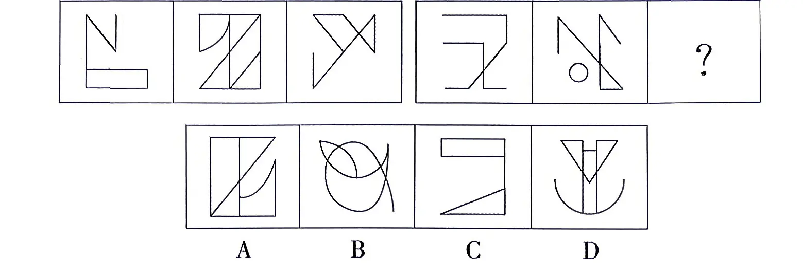
从所给四个选项中，选择最合适的一个填入问号处，使之呈现一定规律性：0 夫
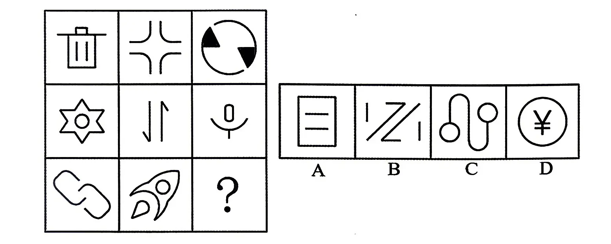
从所给四个选项中，选择最合适的一个填入问号处，使之呈现一定规律性：
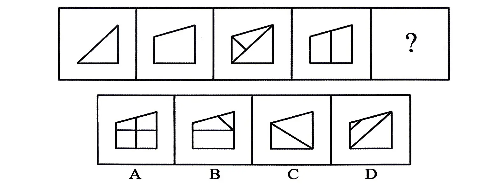
从所给的四个选项中，选择最合适的一个填入问号处，使之呈现一定的规律性：
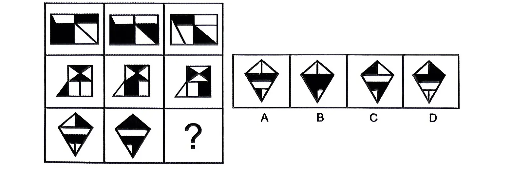
从所给的四个选项中，选择最合适的一个填入问号处，使之呈现一定的规律性：
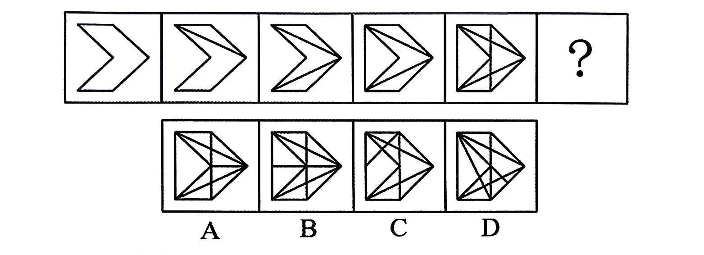
从所给的四个选项中，选择最合适的一个填入问号处，使之呈现一定的规律性：
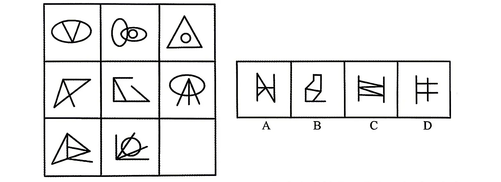
把下面六个图形分为两类，使每一类图形都有各自的共同特征或规律，分类正确的一项是：
② ③ ④ 5 6
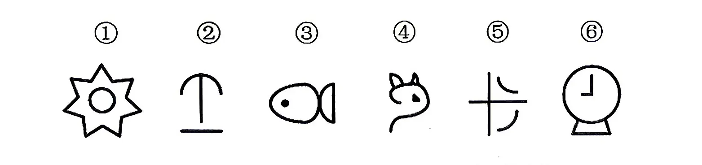
A.①③⑥，②④⑤ B.①③⑤，②④⑥ C.①③④，②⑤⑥ D.①②⑤，③④⑥
把下面的六个图形分为两类，使每一类都有各自的共同特征或规律，分类正确的一项是（）。
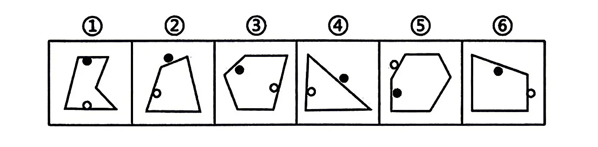
A.①②③，④⑤⑥ B.①⑤⑥，②③④ C.①②⑥，③④⑤ D.①④⑥，②③⑤
左下图为两个正方体组合而成的长方体，这两个正方体的外表面展开图分别可能是：
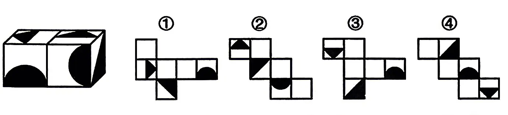
A.①和② B.③和④ C.①和④ D.②和③
从所给的四个选项中，选择最合适的一个填入问号处，使之呈现一定的规律性：
① ② ⑧
中选出一个最符合或最不符合定义的答案。注意：假设这个定义是正确的，不容置疑的。
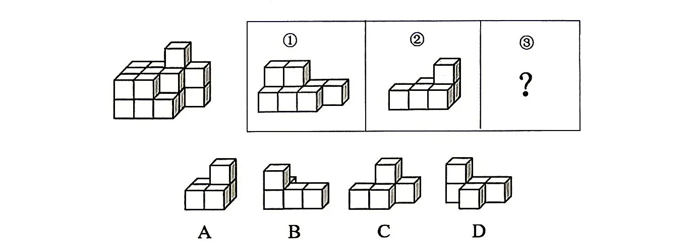
集合概念，就是以事物的群体为反映对象的概念。集合概念所反映的事物的属性，是从整体上反映一个集体的共性。集合概念所反映的属性只适合于集合体，而不适合于该集合体的个体。根据上述定义，下列不属于集合概念的是（）。
A.“我国的一切权利属于人民”中的“人民”
B.“北海舰队属于北部战区”中的“舰队”
C.“群岛是散落在海洋中的明珠”中的“群岛”
D.“我国的大学分布在全国各地”中的“大学”
认知计算是指机器通过与人的自然语言交流及不断学习从而帮助人们做到更多的系统。认知计算试图解决生物系统中的不精确、不确定和部分真实的问题，以实现不同程度的感知、记忆、学习、语言、思维和问题解决等过程。根据上述定义，下列不符合认知计算的是（）。
A.甲公司通过开发一套认知系统来提高销售产量，这套系统使用了机器学习来对顾客进行分类并且指导销售员工对不同顾客销售哪种产品
B.乙平台是一套基于云的解决方案，它能够辨识网络外部防御的异常行为，之后识别出恶意软件的侵害或数据损失，协助行为分析和异常探测工作
C.丙公司推出的智能机器人，可以与人类正常沟通，可以在银行、餐饮、零售、酒店、医疗等领域为人类提供智能的信息化服务
D.丁国“脑科学时代计划”把建立认知、运动、行为和思想的计算原理列为重点研究领域
焦虑易感性是指焦虑易感性越高的人越是会因为自己的焦虑表现（比如心跳加快、惊慌感）而恐惧，会更加留意自己出现的焦虑反应，这就使得他们更容易出现“对焦虑的焦虑”。根据上述定义，下列符合焦虑易感性的是（）。
A.不同个体由于遗传结构不同，在外界环境影响的条件下呈现出易患多基因病的倾向
B.对于本来就比较便宜的东西，人们普遍对于打折多少并不敏感，不买最便宜的，只买打折最狠的
C.有心悸经历的人可能会把它看作能危及到心脏的发作，结果导致焦虑的增加
D.对没有事实根据也无明确客观对象和具体观念内容的提心吊胆和恐惧不安的心情
诡辩是违背逻辑规律而作的一种自作聪明但有欺骗性的似是而非的推理和论证。在宣传中论证一个命题或说明一个问题时，诡辩论者不去如实地、以有力的逻辑力量揭示事物的内在联系，而是从主观出发，以片面的、表面的、甚至不相于的一些现象制造虚假的联系、因果关系和主从关系，达到混淆是非、颠倒黑白的目的，为其荒谬的言论制造一种骗人的推理形式。根据上述定义，下列不属于诡辩的是（）。
A.有人说，“没有什么比爱情更美好，但有一碗粥总比没有什么好，所以有一碗粥其实比爱情更美好。”
B.有人论证指出：你学习得越多，就知道得越多；你知道得越多，就忘记得越多；而你忘记得多，知道得就越少。所以，你学习得越多，就知道得越少
C.有这样一个论证：偶然事故是经常发生的，从法国到上海的航班掉下行李是偶然事故，所以，从法国到上海的航班掉下行李是经常发生的
D.严禁触摸电线，五万伏高压，一触即死，不死法办
转移性支出是政府无偿向居民和企业以及其他单位供给财政资金，是指政府按照一定方式，把一部分财政资金无偿的、单方面转移给居民和其他收益者的支出，它包括各项财政补贴支出、社会保障支出、国债的利息支出等。根据上述定义，下列属于转移性支出的是（）。
A.为了保护农民种粮的积极性，政府收购过剩农产品
B.政府对国家煤炭企业的基本建设实行投资拨款制度
C.政府鼓励各机关单位人员对灾区受灾人员定向捐赠
D.政府向减污减排、节能环保企业提供环保专项补贴
在某个定义域上有加减乘除等多种二元运算（用★代表其中一种）如果在定义域内存在一个数w，对于定义域范围内的每个数m（包括w），都有w★m=m，则称w为该种二元运算上的左幺元。以下关于左幺元的叙述正确的是：
A.在整数范围内的乘法运算中，1是左幺元 B.在整数范围内的加法运算中，1是左幺元 C.在整数范围内的减法运算中，0是左幺元 D.在整数范围内的除法运算中，0是左幺元
物质循环是指在生态系统中，各种元素物质沿着特定途径从周围环境中被生物体吸收利用，再从生物体回到周围环境的循环变化过程，即各种元素物质在生物体和非生物环境之间的往复循环运转过程。下列诗句中所描写的内容最能体现物质循环的是：
A.时有落花至，远随流水香 B.莫作绕山云，循环无定期 C.黄河之水天上来，奔流到海不复回 D.落红不是无情物，化作春泥更护花
免疫电镜技术是将抗原抗体反应的特异性和电子显微镜的高分辨率相结合，在亚细胞和超微结构水平上对抗原进行定位分析的一种高精确度的技术。根据上述定义，下列不属于免疫电镜技术的是：
A.酶的催化作用对其底物的反应可形成不同的电子密度，运用电子显微镜来观察，可确定酶的存在，从而对抗原进行定位
B.胶体金与铁蛋白一样具有高电子密度，将沙门氏菌的抗血清与胶体金颗粒结合，可以明确病原物抗原在电镜水平的定位
C.铁蛋白通过交联剂与抗体等物质的共价结合，其分辨率高、散射能力强，借助电镜可以准确描述抗原抗体复合物的定位
D.微流体检测芯片中的免疫电极体系有镀金基层、导电聚合物层和抗体层，三者自下而上依次贴合，提高检测定位的水平
近零碳建筑是指建筑物通过适应气候特征和场地条件，最大幅度地降低建筑对能源的需求，运行过程中全电化，不使用燃气，建筑排放的碳量处于较低水平，近零碳建筑不仅利用各种方法减少自身产生的碳排放，还收集并利用雨水、太阳能等可再生能源，最终达到零废水、零能耗、零废弃物的理想状态。下列做法不符合近零碳建筑理念的是：
A.加大物联网、大数据、人工智能等技术在建筑上的应用
B.淘汰预制模块化建筑技术，采用传热系数高的幕墙建材
C.实现建筑内空调精细化运行，始终保持温湿度的独立控制
D.利用集成地源热泵、空气源热泵、光伏发电等可再生能源
吉普赛陷阱是指在谈判过程中突然提出比刚才的出价更高的价格，并且不承认刚才的出价，这样，对方很容易就会将注意力转移，变得迫切想让双方承认刚才的出价，而忘记将价格压得更低。根据上述定义，下列涉及吉普赛陷阱的是：
A.在小琳印象中这款裙子今天0:00开始八折售卖，打开购物软件才发现记错了时间活动早已结束，便与客服协商按活动价购买，后八折将其买到
B.李经理与生产商谈判明年订单价格时相持不下，生产商告知其有客户出价很高，如若对价格不满意可以取消合作，最终以今年既定的价格成交
C.小张卖房时购房者小赵的出价远低于他的预期，故未成交，一周后小赵将价格提高了20%，虽仍未达到小张满意但他想尽快出售，遂交易成功
D.小王与客户商谈价格时客户要求降价5%，小王回答说之前的报价未计入运输费，要在原先报价的基础上提高3%，最终双方以原先的报价成交。
宜居带：液态水
A.舒适区：页岩气 B.生物圈：有机物 C.无人区：可燃冰 D.地震带：火山岩
拥挤：水泄不通
A.清晰：洞见肺腑 B.严重：触目惊心 C.费力：举重若轻 D.伤心：肝肠寸断
刀：锋利：切割
A.窗玻璃：透明：挡风 B.灯：明亮：照明 C.床：柔软：舒适 D.保温杯：隔热：盛水
英国文学：法国文学：古典文学
A.律诗：绝句：五言绝句 B.独奏曲：合奏曲：钢琴曲 C.曲艺：相声：单口相声 D.诗歌：古体诗：近体诗
编辑部 对于 （ ） 相当于 （） 对于 学校
A.作者，校园 B.档案处，学生处 C.期刊，学生 D.出版社，教务处
科学家重建地球地质历史上的大气成分面临的难题之一就是缺少可用样品。近年来，不少人开始关注琥珀，他们认为相比其他有机材料，琥珀在长久的地质年代内，所保存的化学和同位素信息几乎不会改变，因此可以用于揭示不同年代的全球大气成分。以下哪项如果为真，最能质疑上述结论？
A.由于琥珀内部常保留着生物的形体，故能反映当时生态环境与生物的关系
B.琥珀主要诞生于约4000万至6000万年前的始新世纪，其他年份并没有形成琥珀
C.琥珀是由松柏科植物的树脂经压力和热力作用形成，由于时间漫长，数量极少
D.琥珀的硬度较低，如果因搬运、储存不当而造成损害，会影响同位素检测的准确性
某单位今年新招收了30名职工。①新招收的职工里有人是外地的；②新招收的职工里，学历最高的不是外地人；③新招收的职工里有人不是外地的。如果上述三个判断中只有一个是真的，则下列哪项正确地表示了该单位新招收的职工中外地人的数量？
A.只有1个人是外地人 B.30名职工都是外地人 C.30名职工都不是外地人 D.只有1个人不是外地人
研究人员在正常的海水和包含两倍二氧化碳浓度的海水中分别培育了某种鱼苗，鱼苗长大后被放入一个迷宫。每当遇到障碍物时，在正常海水中孵化的鱼都会选择正确的方向避开。然而那些在高二氧化碳浓度下孵化的鱼却会随机地选择向左转或向右转，这样，这种鱼遇到天敌时生存机会减少。因此，研究人员认为在高二氧化碳环境中孵化的鱼，生存的能力将会减弱。以下哪项如果为真，不能支持该项结论？
A.人类燃烧化石燃料产生的二氧化碳大约有三分之一都被地球上的海洋吸收了，这使得海水逐渐酸化，会软化海洋生物的外壳和骨骼
B.在二氧化碳含量高的海洋区域，氧气含量较低。氧气少使海洋生物呼吸困难，觅食、躲避掠食者以及繁衍后代也变得更加困难
C.二氧化碳是很多海洋植物的重要营养物质，它们在日光照射下把叶子吸收的二氧化碳和根部输送来的水分转变为糖、淀粉以及氧气
D.将小丑鱼幼鱼放在二氧化碳浓度较高的海水中饲养，并播放天敌发出的声音，结果这组小鱼听不到声音
对许多人来说，阿尔茨海默病是一种熟悉而可怕的疾病，虽进展缓慢但无情剥夺着患者的记忆力、辨别力还有认知力，使他们无法进行日常生活。一些研究认为，这种病主要是大脑内部蛋白质的异常积聚导致的，这些异常积聚会在脑中形成淀粉样斑块和缠结，最终导致突触（大脑中的连接节点）减少，从而降低认知能力。以下哪项如果为真，最能削弱上述结论？
A.在正常人群中，大脑组织里也会有一定数量的蛋白质存在，时多时少
B.在该病形成早期，神经突触就开始减少，这种减少引发了蛋白质的堆积
C.动物实验显示，如果消除动物脑部已形成的淀粉样斑块，突触并没有减少
D.作为大脑中的神经连接，突触会被不断修剪，这是大脑正常发育的重要过程
甲、乙、丙、丁、戊、己六位运动员的跳高纪录有如下比较：（1）乙的成绩比丙好，但不如甲；（2）丁的成绩不如甲和丙；（3）戊的成绩好于丁和己，但不如甲和丙。由此，可以确定：
A.丁的成绩好于己 B.己的成绩好于丁 C.戊的成绩好于乙 D.乙的成绩好于戊
一项实验中，研究人员在小鼠的青少年期（出生后35-42天）让它们连续5天每天少睡4小时。结果发现：这些小鼠成年后，与对照组正常睡眠的小鼠相比，社交行为出现了异常。对照组小鼠对陌生小鼠有着天然的好奇，会积极与之社交，而经历了睡眠干扰的小鼠失去了与陌生小鼠社交的兴趣。研究人员据此认为：青少年期缺乏睡眠将会对日后的社交行为产生不利影响。以下哪项如果为真，最能支持上述结论？（）
A.在患有孤独症、精神分裂症的人群中，睡眠障碍出现的比例高达50%~80%
B.如果对成年小鼠进行睡眠干扰，它们会出现疲惫、注意力无法集中、肥胖等问题
C.很多社交行为问题的产生源于青少年时期，甚至更早，与遗传、家庭环境等密切相关
D.对小鼠进行睡眠干扰后，其脑内多巴胺能神经元生长出现障碍，导致成年后大脑多巴胺系统无法对新出现的社会性刺激做出有效响应
某工厂尝试施行一周三休制，即员工每周工作四天，休息三天，并按比例降低员工的工资。制度施行一年后，工厂利润比上年提高了10%，工厂负责人表示：一周三休制既有助于提高工厂效益，也能切实提升员工幸福感。以下哪项如果为真，最能质疑上述结论？（）
A.制度施行一年后，该工厂员工的离职率有所上升
B.该工厂的员工可以自主选择通过加班提高工资待遇
C.当年该工厂的利润增长主要来源于原材料成本下降
D.工作时长变短会促使员工提高工作效率以完成任务
在长期的进化过程中，蝙蝠（狐蝠除外）获得了对夜间飞行十分有利的回声定位能力，可以将喉咙和鼻子处生成的超声波以短脉冲形式发射到周围，并且能用耳朵接收反射回的声波，以此来确定自身到物体的距离、物体所在方向以及物体形状等。一般来说，蝙蝠的寿命比其他相同体型的哺乳类动物要长3.5倍，有科学家推测，蝙蝠的夜行性和飞行能力可以降低它们被捕食的风险，这可能对其寿命的延长有所帮助。以下哪项如果为真，最能加强上述科学家的推测（）
A.在夜间飞行时，如果蝙蝠的耳朵被堵住，它们就无法顺利地躲避障碍物
B.倒挂姿势不仅有助于蝙蝠起飞，还可以使它们睡在洞穴顶部等隐蔽场所
C.黑暗中蝙蝠能够正确识别周围环境，这有助于它们成功躲避天敌的侵扰
D.蝙蝠体内抑制病毒感染和增殖的蛋白质较多，即使感染病毒也不会发病
某研究指出，阻力训练可以帮助预防或延缓阿尔茨海默病（AD），研究者给小鼠的尾部绑上拉力带，将其放置在一个倾斜的木板上并训练向上爬，训练四周后，小鼠的血液样本分析表明，参与阻力训练小鼠的大脑中很少出现β-淀粉样蛋白累积，皮质酮（相当于人类分泌的皮质醇）也处于正常水平，除此之外，阻力训练增加了小鼠大脑中小胶质细胞的数量，这种细胞在AD早期对大脑有重要保护作用，比如清除β-淀粉样蛋白的多肽和细胞钾片，减轻大脑局部炎症。以上论述如果为真，必须基于的前提是（）
A.皮质醇水平在AD早期阶段会呈现升高的趋势
B.大脑中累积的β-淀粉样蛋白是导致罹患AD的元凶
C.阻力训练会使小胶质细胞从促炎状态转变成抗炎症状态
D.皮质醇会在压力过大时生成并使得个体容易焦虑和躁动
党内存在的很多问题都同政治问题相关联。不从政治上认识问题、解决问题，就会陷入头痛医头、脚痛医脚的被动局面，就无法从根本上解决问题。提高政治能力，很重要的一条就是要善于从政治上分析问题、解决问题。只有从政治上分析问题才能看清本质，只有从政治上解决问题才能抓住根本。根据以上陈述，可以得出以下哪项？
A.只有从政治上认识问题、解决问题，才能从根本上解决问题
B.如果善于从政治上分析问题、解决问题，就能提高政治能力
C.一旦陷入头痛医头、脚痛医脚的被动局面，就无法从根本上解决问题
D.如果没有看清本质、抓住根本，说明没有从政治上分析问题、解决问题
2023 年一季度，Z 省实现软件业务收入 2069.7 亿元，同比增长 7.6%，增速较 1-2 月回升 3.7 个百分点，低于全国平均 5.9 个百分点，占全国软件业务收入的 8.5%。其中，全省营收十亿元以上的企业实现软件业务收入1790.2 亿元，同比增长 8.9%。
分类型看，一季度，全省实现软件产品收入 278.9 亿元，同比增长 10.5%，拉动全省软件业增长 1.4 个百分点。全省实现信息技术服务收入 1720.4 亿元，同比增长 7.1%。（从细分领域来看，云服务实现收入 218.5 亿元，同比增长 4.6%；大数据服务实现收入 663.2 亿元，同比增长 3.8%；电子商务平台技术服务实现收入 191.4 亿元，同比增长 20.4%；集成电路设计实现收入 32.9 亿元，同比增长 9.7%）。全省实现信息安全收入 3.9 亿元，同比增长 26.4%。全省嵌入式系统实现收入 66.6 亿元，同比增长 9.0%。
2023 年一季度，全省软件产业实现利润总额 503.7 亿元，同比增长 45.5%，高于全国平均 30.4 个百分点，占全国利润总额的 18.9%。
一季度，全省软件业平均用工人数达 48.2 万人，从业人员工资总额达 393.5 亿元，人均工资达 8.2 万元，同比增长 11.3%。
2023年一季度，Z省实现信息安全收入较上年同期增长（）万元。
A.0.81 B.8145 C.1.03 D.10300
以下饼形图中，最能准确反映2023年一季度，Z省云服务、大数据服务、电子商务平台技术服务、集成电路设计和其他细分领域实现收入占全省实现信息技术服务收入比重的是（）
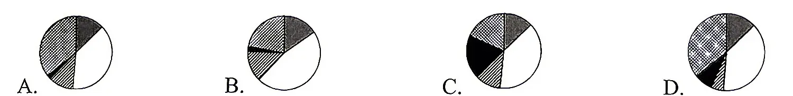
2022年一季度，Z省营收十亿元及以下的企业实现软件业务收入在（）亿元之间
A.150-200 B.200-250 C.250-300 D.300-350
2023年一季度，全国软件业务收入利润率（利润率=利润÷收入）较上年同期（ ）
A.增长 6.34 百分点 B.增长 0.15 百分点 C.下降6.34百分点 D.下降0.15百分点
根据上述材料，下列说法正确的是（）
A.2023年3月，Z省软件业务收入同比增速不到5%
B.2023年一季度，Z省实现软件产品收入对全省软件业务收入的贡献率约为15%
C.2022年一季度，Z省软件业从业人员人均工资超过82000元
D.2022年一季度，Z省实现信息安全收入约3.1亿元。
表 2024 年 2-11 月我国全部营业性货运量年内累计值及其同比增速（数值据原表逐格核对）
| 时间 | 全部营业性货运量 | 公路货运量 | 水路货运量 | |||
|---|---|---|---|---|---|---|
| 数量（亿吨） | 同比增长（%） | 数量（亿吨） | 同比增长（%） | 数量（亿吨） | 同比增长（%） | |
| 2024 年 2 月 | 76.6 | 7.3 | 54.5 | 7.8 | 14.0 | 10.2 |
| 2024 年 3 月 | 124.5 | 4.9 | 90.1 | 5.1 | 22.0 | 7.9 |
| 2024 年 4 月 | 172.7 | 4.5 | 126.0 | 4.7 | 30.2 | 7.1 |
| 2024 年 5 月 | 221.7 | 4.4 | 162.2 | 4.4 | 38.6 | 7.0 |
| 2024 年 6 月 | 269.9 | 4.1 | 197.7 | 4.0 | 47.0 | 6.3 |
| 2024 年 7 月 | 317.9 | 3.7 | 233.5 | 3.6 | 54.9 | 5.4 |
| 2024 年 8 月 | 366.7 | 3.4 | 269.6 | 3.2 | 63.3 | 5.1 |
| 2024 年 9 月 | 416.3 | 3.3 | 306.6 | 3.1 | 71.6 | 4.8 |
| 2024 年 10 月 | 466.5 | 3.3 | 343.6 | 3.2 | 80.2 | 4.6 |
| 2024 年 11 月 | 517.3 | 3.4 | 381.1 | 3.3 | 89.0 | 4.6 |
2024年7月，我国公路货运量约环比增长（）
A.0.8% B.2.2% C.3.6% D.4.0%
2023年上半年，我国水路货运量是 2023年第一季度的（）倍
A.1.9 B.2.0 C.2.1 D.2.2
2024年3-11月中，全国全部营业性货运量当月同比增速与累计同比增速持平的月份，水路累计货运量的月均值约为（）亿吨
A.7.0 B.7.5 C.8.0 D.8.5
若保持2024年11月环比增长量不变，则2024年全国全部营业性货运量为（）亿吨。
A.568.1 B.568.7 C.573.2 D.573.8
以下柱状图反映了（）全国水路货运量环比增量的变化趋势（横轴位置代表增量为0）？
A.4-7月 B.5-8月 C.6-9月 D.7-10月
2024 年，全国粮食总产量 14130 亿斤，同比增长 1.6%（以下均为同比增长），较上年提高 0.3 个百分点。全国粮食播种面积 17.90 亿亩，增长 0.3%。
2024 年，全国生猪出栏 70256 万头，下降 3.3%。全国肉牛出栏 5099 万头，增长 1.5%。全国羊出栏 32359 万只，下降 4.4%。全国家禽出栏 173.4 亿只，增长 3.1%。
表 2024 年全国粮食产量相关情况（数值据原表逐格核对）
| 绝对额（亿斤） | 同比增长量（亿斤） | |
|---|---|---|
| 粮食总产量 | 14130 | 221.8 |
| 按季节分 | ||
| 夏粮 | 2997.8 | 74.8 |
| 早稻 | 563.5 | -3.3 |
| 秋粮 | 10568.7 | 150.3 |
| 按品种分 | ||
| 小麦 | 2802 | 70.2 |
| 玉米 | 5898.3 | 121.5 |
| 稻谷 | 4150.7 | 18.6 |
| 薯类和豆类 | 1084.3 | 4.6 |
图 2018 年-2023 年全国稻谷单位面积产量（保留卷面原图）
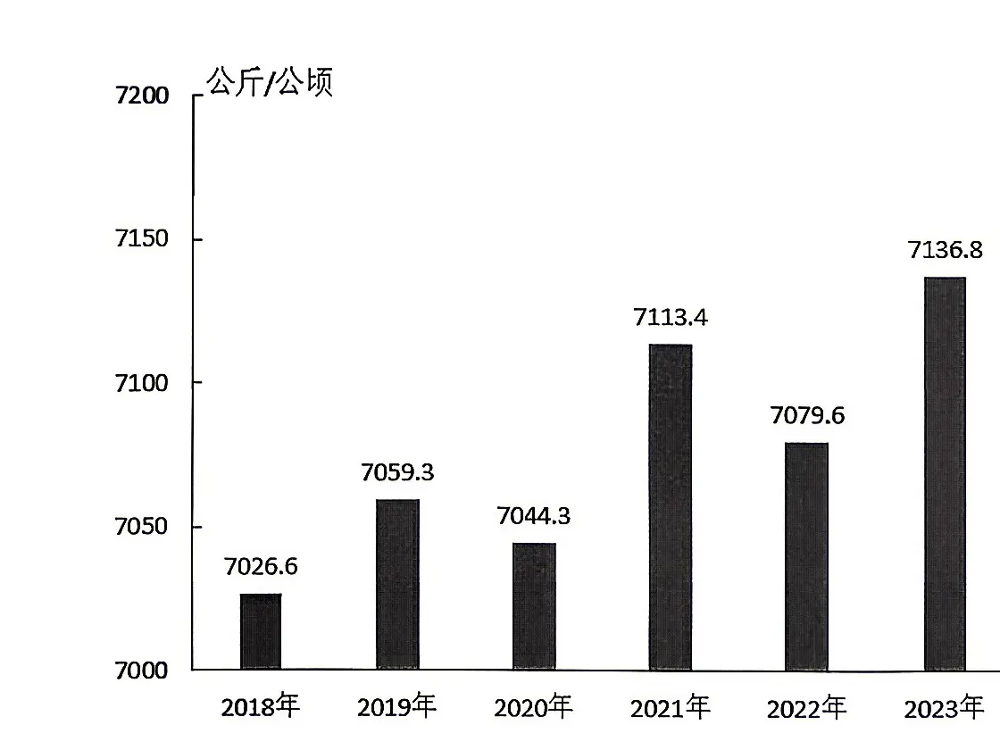
2024年，全国小麦、玉米、稻谷、薯类和豆类产量的同比增长最快的是（）
A.小麦 B.玉米 C.稻谷 D.薯类和豆类
2023年，全国稻谷种植面积约为（）万公顷
A.2630 B.2895 C.5260 D.5790
2024年，全国羊出栏量约比上年（）
A.增长了0.15亿只 B.增长了 150 万只 C.减少了0.15亿只 D.减少了150万只
2024年，全国粮食单位面积产量同比增长（）公斤/亩？
A.10.10 B.7.90 C.5.05 D.3.95
根据上述材料，下列说法中错误的是（）
A.2023年，全国秋粮产量比夏粮产量多7495.4亿斤
B.2020年，全国稻谷种植面积的同比增长率低于全国稻谷产量的同比增长率
C.2024 年，全国粮食产量较 2022 年约增长 2.9%
D.2024年，全国家禽出栏数量的同比增长率比肉牛出栏的高1.6个百分点
2024 年，全国共投入研究与试验发展（R&D）经费 36326.8 亿元，比上年增长 8.9%；研究与试验发展（R&D）经费投入强度（与国内生产总值之比）为 2.69%，比上年提高 0.11 个百分点。按研究与试验发展（R&D）人员全时工作量计算的人均经费为 48.0 万元，比上年增加 1.9 万元。
分活动类型看，全国基础研究经费 2500.9 亿元；应用研究经费 4305.5 亿元，增长 17.6%；试验发展经费29520.4 亿元，增长 7.6%。基础研究经费所占比重为 6.88%，比上年提升 0.11 个百分点；应用研究和试验发展经费所占比重分别为 11.9% 和 81.2%。
分活动主体看，各类企业研究与试验发展（R&D）经费 28211.6 亿元，比上年增长 8.8%；政府属研究机构经费4231.6 亿元，增长 9.7%；高等学校经费 3065.5 亿元，增长 11.3%；其他主体经费 818.1 亿元，下降 0.9%。
分产业部门看，规模以上高技术制造业研究与试验发展（R&D）经费 7668.9 亿元，比上年增长 10.2%；投入强度（与营业收入之比）为 3.35%，比上年提高 0.24 个百分点。
2023 年国内生产总值约为（）万亿元。
A.1290000 B.1350000 C.129 D.135
2024年全国基础研究经费比上年同期增长了（）。
A.10.7% B.8.8% C.7.6% D.6.88%
若2023 年各类企业研究与试验发展（R&D）经费同比增长8.6%，则 2024年该经费是2022年的（）倍。
A.1.17 B.1.18 C.1.20 D.1.82
2024 年按研究与试验发展（R&D）人员全时工作量计算的人均经费比上年增长了( )。
A.5.9% B.5.3% C.4.5% D.4.1%
下列说法正确的是（）。
A.2024年，应用研究经费比基础研究经费多1704.6亿元
B.2024年，应用研究经费占全国研究与试验发展（R&D）经费的比重同比下降
C.2024年，高等学校投入经费约为其他主体经费的3.75倍
D.2024年，规模以上高技术制造业的营业收入约为229万亿元